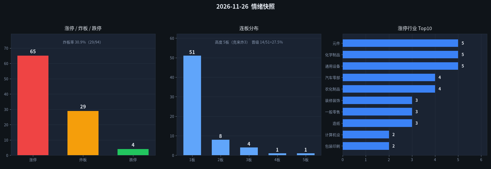

交易日 2026-11-26（周四） · 目标交易日 2026-11-27（周五） · 修复初期·跌停骤收
情绪：修复（初期） 涨停 65 · 跌停 4 炸板率 30.9% · 晋级率 27.5% · 高度 5板| 票 | 昨动作 | 今收盘涨跌幅 | 判定 |
|---|---|---|---|
| 全市场 | 空仓观望 | 上证 +0.01%、创业 +0.29%、中证1000 −0.18%；跌停 43→4，涨停 51→65 | 对 |
| 中京 / 九阳 / 金新农 / 克来等残留高度 | 不加 | 中京炸板 +7.91%（额43.44）；九阳炸板 +8.66%（额51.75）；金新农 +6.39%；克来晋级 5板（炸3，额13.05）；解百晋级 4板（炸8，14:55回封）；创源 −8.43% | 部分对 |
| 医药中药首板簇 | 只观察不加 | 康芝 +13.40% 未封、亨迪 +7.02%、桂林 +5.14%、特一高开+10%收 +3.47%、新华 −2.06%，无中军 | 对 |
| 汽车零部 / 算力中军 | 只观察不加 | 拓普 −7.24%、新泉 −3.43%；襄阳轴承首板 +10.02%；沪电 +2.01%、深南 +3.81%、旭创 +5.18%、崇达 +10.02% | 对 |
| 跌停、断板反抽、单独大额板 | 不加 / 不抄 | 鑫铂 −8.88%、英力特 −5.72% 继续弱；盛剑 14:56 偷鸡 2板，金牛 3板（炸0），青山 2板（炸3，额30.48） | 部分对 |
总结：空仓、不追医药、不抄跌停、不追中军低位全部对。残留高度和单独大额板里，克来/解百/金牛/青山/盛剑今天仍晋级，但中京、九阳作为更高标已断板，且解百炸8、盛剑尾盘偷鸡、青山炸3，质量差，不加的方向仍对。
改进：1）跌停骤收日，把相对干净的大额首板单列观察，而不是继续用退潮加深一刀切，但不因此接力脏高度（未回测）；2）尾盘偷鸡回封次日不升级（未回测）。
修复（初期）。跌停 43→4 骤收，红盘 9.29%→32.0%，活跃度 10.85%→32.22%，亏钱效应明显缓解。涨停 51→65 只是小增，晋级 14/51=27.5% 仍偏低，炸板率 37.0%→30.9% 略降但仍不低；指数高开回吐收平（上证+0.01%、创业+0.29%、中证1000−0.18%），赚钱效应一般。高度板质量差（中京/九阳断板，克来炸3，解百炸8）。涨停数量远未到近两周修复偏强（11/23 的 145）或启动级别，故定为修复初期，不是启动，也不是继续退潮。

情绪快照：涨停 / 炸板 / 跌停，连板分布，涨停行业 Top10
| 指标 | 今日 | 昨日 | 变化 |
|---|---|---|---|
| 涨停（清洁） | 65 | 51 | +14 |
| 跌停（清洁） | 4 | 43 | −39 |
| 炸板 | 29 | 30 | −1 |
| 炸板率 | 30.9%（29/94） | 37.0%（30/81） | 略降，仍不低 |
| 连板高度 | 5板（克来机电，炸3，末封11:04，额13.05亿） | 5板（中京尾盘封，额41.87亿） | 高度持平，昨高标断板 |
| 昨涨停晋级率 | 14/51=27.5% | 14/55=25.5% | 略升，仍偏低 |
| 昨涨停炸板 / 改跌停 | 炸3、跌停0 | 炸2、跌停5 | 昨涨停未再改跌停 |
| 红盘占比 | 32.0%（上涨1721 / 下跌3500 / 平盘163，合计5384） | 9.29% | 广度明显修复 |
| 两市成交额 | 约13174亿（上证6133 + 深成7040） | 约13831亿 | 缩量约657亿 |
| 涨停 / 炸板 / 跌停池额 | 488.8 / 318.0 / 8.3 亿 | 304.5 / 106.5 / 189.0 亿 | 涨停额升，跌停额塌缩，炸板额升（中京/九阳大战） |
连板分布：1板 51、2板 8、3板 4、4板 1、5板 1。涨停/炸板清洁后无需再剔 ST/北交所；跌停 raw5→clean4（剔北交所鼎智科技920593）。家家悦收盘 +10.02% 贴近涨停，但东财归在炸板池、未进涨停池，晋级按官方清洁池计 14/51，不把它算晋级。新浪显示华东重机（002685）收盘跌停（开收均为8.09，盘中高8.43），东财跌停清洁池未收录，作口径缺口。
今天没有干净主线。钱散在残留高度、零散晋级和部分大额首板上，中军没有同步。
空间龙 / 趋势龙 / 中军：无。辅线与高度杂毛分开看，都不升级开仓；观察线只放相对干净的大额首板。
情绪 = 修复（初期） → 专项总仓建议 0%（默认空仓，未回测）；同时持仓建议 0 只；若竞价满足「相对干净大额首板、高开≤3%、对应中军同步」才允许把观察线升级为 1 只、≤8% 极轻试错（未回测）。不接力克来5板与解百脏4板，不抄中京/九阳断板，不追盛剑尾盘2板。
指令1｜全市场
空仓观望| 代码+名称 | —（不点名追昨涨停或残留高度） |
|---|---|
| 动作 | 空仓观望（默认） |
| 进场 | 无。周五竞价若昨涨停大量低开＞5%，或克来/解百打开后直线砸，或跌停重新走扩、指数快速跳水 → 全天不交易。 |
| 仓位 | 0%（未回测） |
| 原因 | 修复初期：跌停已骤收、广度修复，但晋级偏低、高度质量差、没有干净主线和中军同步。 |
| 作废 | 仅当盘中同时出现「竞价平稳、出现早盘干净大额首板或弱转强回封、且对应中军同步」才允许按指令3把观察线升级为极轻试错（否则维持空仓，未回测）。 |
指令2｜残留高度与脏高度
不加| 代码+名称 | 603960 克来机电；600814 杭州解百；002651 利君股份、002872 天圣制药；002579 中京电子、002242 九阳股份；603324 盛剑科技；600103 青山纸业、002086 东方海洋；603030 全筑股份 |
|---|---|
| 动作 | 不加（不接力克来5板、不解百炸8的4板、不接地量3板，不抄中京/九阳断板，不追盛剑14:56偷鸡2板，不追青山炸3、东方海洋炸8） |
| 仓位 | 0% |
| 原因 | 高度要么反复炸板、要么地量一字、要么尾盘偷鸡，昨高标已经断板，都不是空间龙。 |
指令3｜冰山冷热 / 崇达技术
只观察 · 默不加| 代码+名称 | 000530 冰山冷热；002815 崇达技术 |
|---|---|
| 动作 | 只观察 / 默不加（这是唯二允许升级的观察线） |
| 进场 | 无默认开仓。记录竞价强弱：高开＞3% 或一字直接放弃。仅当竞价平稳（低开或高开≤3%）、开盘后弱转强或回封，且中军同步（冰山看制冷/通用设备是否跟上，崇达看沪电/深南/景旺是否同步转强）时，才允许选 1 只 极轻试错。不追开盘后已快速拉开的。 |
| 止损 | 炸板不回封，或竞价弱开后继续砸、半小时内走势明显弱于板块，则离场。 |
| 目标 | 分歧减，不预期连板空间。 |
| 仓位 | 默认 0%；升级时 ≤8%、只做 1 只（未回测） |
| 原因 | 冰山冷热是今天最干净的大额首板（27.30亿炸0）；崇达是元件里相对干净的大额首板（21.09亿炸1），但中军都还没真正同步，所以默认只观察。 |
| 作废 | 竞价高开＞3% 或一字；对应中军砸盘；高度断板扩散或跌停重新走扩（回到指令1，未回测）。 |
指令4｜金牛 / 好当家 / 襄阳，及汽车、算力中军
只观察 · 不加| 代码+名称 | 600722 金牛化工、600467 好当家、000678 襄阳轴承；601689 拓普集团、603179 新泉股份；002463 沪电股份、002916 深南电路、603228 景旺电子、300308 中际旭创、300502 新易盛、300394 天孚通信、603893 瑞芯微 |
|---|---|
| 动作 | 只观察 / 不加（不接力金牛3板，不追好当家老2板，不追襄阳无中军跟风，不抄拓普低位，不把PCB温和修复当主线切换） |
| 进场 | 无开仓。只记录竞价强弱与中军是否同步。高开＞3% 或一字直接放弃。 |
| 仓位 | 0%（未回测） |
| 原因 | 金牛虽干净但已3板且无中军；好当家统计11/7偏老；襄阳与拓普背离；算力中军只是温和修复，科创50收负。 |
| 作废 | —（升级条件只走指令3，未回测） |
指令5｜跌停、断板反抽、午后脏回封
不加 / 不抄底| 代码+名称 | 605378 野马电池、001278 一彬科技、300469 信息发展、603391 力聚热能；002685 华东重机（新浪收盘跌停、东财池未收录）；002242 九阳股份、002579 中京电子；300324 旋极信息、002261 拓维信息、603118 共进股份 |
|---|---|
| 动作 | 不加 / 不抄底（不抄跌停，不抄中京/九阳断板反抽，不追午后反复炸板回封） |
| 仓位 | 0% |
| 原因 | 跌停虽骤收，但抄跌停和断板在修复初期仍容易被砸；午后脏回封不是主线。 |
若你已持有短线票